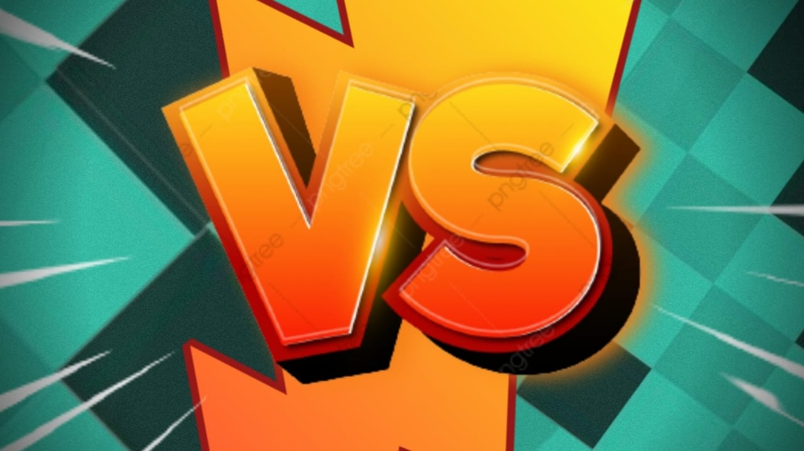
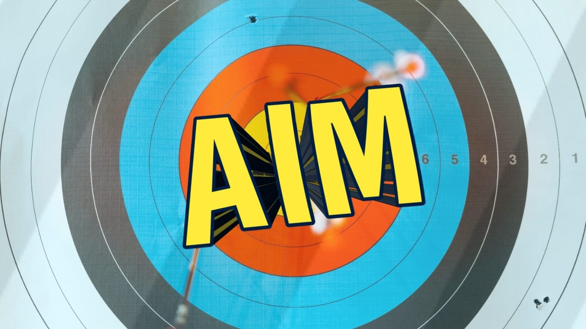
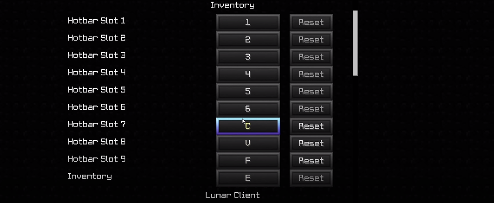

Hola! Once again, Suck at PvP! Wanna impress some friends! Right Spot then!
First off Player versus player, also known as PvP, refers to combat in Minecraft which involves players fighting other players in multiplayer.
So, do I even need PvP? Big YES!
Minecraft is mostly famous for its survival game mode. But there is a whole Minecraft community of PVP battles in Minecraft. Players spend hours improving their PVP skills in this game. PVP skills are a necessity to survive in anarchy servers or servers with no player protection.
So without further ado lets jump straight into the Tips & Tricks.
Aim is the Game
Minecraft PvP is very different when it comes to Aiming, Unlike in First Person Shooting you need to constantly be able to click, aim, block and move around at the same time. Many aim trainers promice a minecraft environment for aim training but are useless because all you need is the in-game experience.
~ Lower Your in-game Mouse sensitivity to the point where you can do a 360' while jumping.
~ Make sure that your Cross-Hair doesn't shake whilst you try clicking.
~ It is a better proven method to use your Arm instead of your Wrist for rotation.
~ Always make sure that you have a visible Cross-Hair (+). Use different texture packs or clients to get your perfect Cross-Hair.
~ Go to Mouse Settings> Additional Mouse Settings> pointer options.
Disable the enhanced pointer precision. You are all set for the next Tip.
Knockback
Knockback is how far your opponent goes when dealt with a hit, for some reason it is found that you deal more knockback while sprinting at the first hit than the rest once. This means that even if you are spam clicking you might only be able to get only one good knockback, thats why professionals reset their sprints each time they hit.To deal the same knockback as your first hit you'll need to reset your sprint each time, which is quite simple. Here are the top 3 ways to do it.
1) W-tapping
W-tapping is basically holding and unholding your W-key to reset your sprint. Each time a player releases the W-key and presses it again the sprint gets reset and so does the heavy knockback.
2) S-tapping
It is exactly the same as W-tapping but instead the player keeps on holding the W-key, while single pressing the S-key resetting the sprint and then releasing the S-key.
3) Block-Hitting
It is so far the best sprint reset method, all you need to is to have a Sword. Each time the player right clicks whilst holding the sword, the sword instead of hitting, blocks and removes sprint. Release right click and you get your sprint and knockback again.
Hotkeying matters!
Hotkeying is basically being independent of your mouse scroll wheel and using the num keys to move through your inventory slots. It provides a significant amount of time reduction while choosing an item from the hotbar. It might be difficult at first but is definitely required for the long run.
You can use numkeys from 1-6 and C, F, V as the 7th, 8th, 9th hotbar slot respectively for an ease. But this totally depends on the player. The 'Key' is to remain as close as your ASWD keys.
Strafing Surely Saves!
Strafing is when you either: Circle around your opponent while hitting them so that they have a lower chance of hitting you back or Move side to side repetitively while hitting them so that they have a lower chance of hitting you back. It is done by pressing W-D or W-A simultaneously.
Many might argue that Straight Lining which is the exact opposite of strafing is better, and it is true. If you just wanna 1v1 in an open environment then Straight Lining might be better but in closed environments like Bedwars and Skywars, strafing might be the game changer. Combination of both and you might easily be the next TECHNOBLADE!
CPS!
CPS stands for Clicks per Second. It basically means how many times can you click in a second or just how fast you click. You might have heard that CPS doesn't matter, but well looking at the internet, it surely does.
Most people have an average CPS of 5.5-6 clicks per second. Which is supposed to the minimum anything less than that might rather harm because the player fails to get a hit over his opponent. But as they say "With higher CPS comes lesser Aim". Although CPS is important and gives a clear advantage it makes your aim worse if not practiced. It is better to focus on aim tham CPS
Check Your CPS➜Click Here
There are several clicking methods- Jitter , Drag and Butterfly which can take your cps to 12 clicks and more but be sure to not lose your aim.
Good comes with bad, faster clicking might be useful in-game but it does some real harm to your real life.
Know more about CPS and its harms➜Click HerePing
Ping in simple words is how much time your actions take to be visible to the other player, ping is represented in ms(millisecond) and thats how late your actions might appear. A lower ping is usually better than having higher one. If your ping gets above 250ms then you get a huge disadvantage with timing your hits.
Ping depends on time of the day and even the country you live. Even moving to another room might affect your ping and there's not much you can do about it. Pro players have a very high fps and good ping and it is quite noticible that they hardly take any hit in a game. THANKS TO PING!.
There are also some advantages of higher ping like taking delayed Knockback, making yourself harder to combo at times.
Theres not much you can actually do about your ping. try checking ping on a particular server, play on it if its good for you or else you might be in a disadvantage.